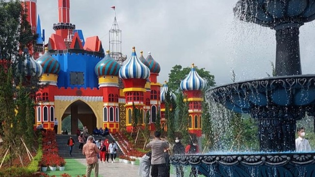

D'Castello
Tempat wisata D'Castello Ciater mengusung konsep layaknya kerajaan yang terinspirasi dari culture Turki dan Belanda. Terdapat banyak gedung layaknya bangunan kastil di tempat ini, dan terlihat colorful, seperti warna merah, biru, kuning, dan campuran warna cerah lainnya. Taman wisata yang rilis sejak tahun 2021 lalu ini juga menghadirkan keindahan ragam bunga warna-warni yang cantik dan air mancur. Bahkan, area duduk dan beristirahatnya pun tampak sangat berwarna, seperti berada di istana dongeng anak-anak. Menikmati pemandangan yang indah serta berfoto di berbagai spot menarik di D'Castello Ciater tentu saja tidak gratis. Namun Anda tidak perlu khawatir, karena harga tiket masuk Taman Flora Wisata D'Castello Ciater cukup terjangkau yaitu sekitar Rp30 ribu untuk hari weekdays (Senin-Jumat) dan Rp40 ribu untuk weekend (Sabtu-Minggu) dan hari libur nasional. Kawasan wisata D'Castello tidak hanya menyediakan spot foto menarik saja, Anda bisa mencoba berbagai kegiatan lainnya. Mulai dari kulineran hingga bermain di wahana permainan yang pasti seru dan menyenangkan.